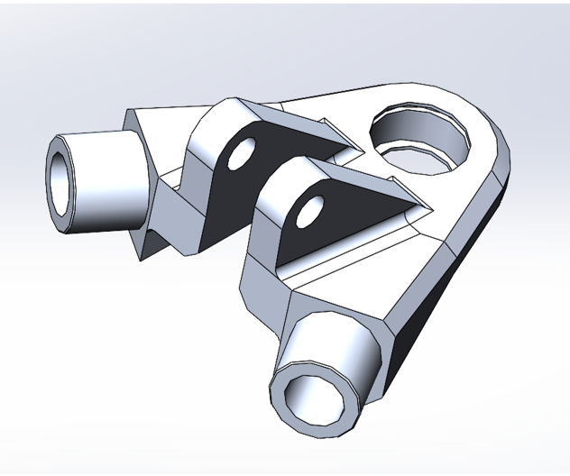
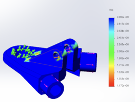
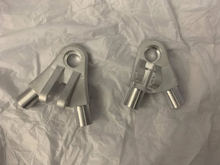
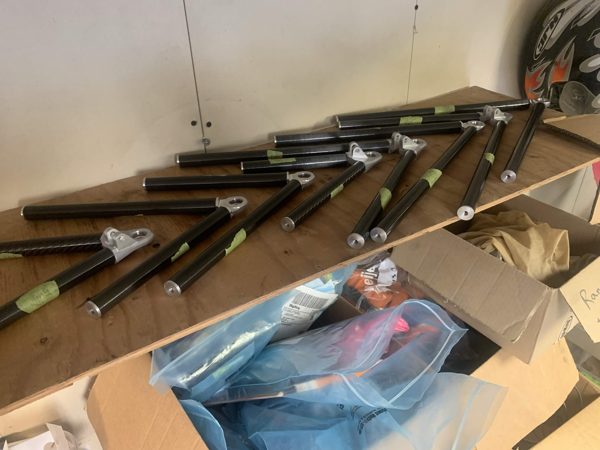

Design of lightweight aluminum suspension A-arm nodes for the University of Victoria Formula Racing EV, the machined joints that bond the suspension arms to their carbon fiber tubes. The carbon-and-aluminum design cuts roughly 3 kg of unsprung mass and lowers the car's yaw moment of inertia, both of which directly sharpen handling. The goal was to make each node as light as possible while still meeting the suspension's kinematic geometry, carrying the on-track loads at an appropriate safety factor, and remaining CNC-machinable

CAD of the front-upper A-arm node.
What I Did
Simulated maximum suspension load cases in Dynatune, then sized bond length with tear-out calculations and tube diameter with maximum-stress calculations.
Designed four unique aluminum A-arm nodes in SolidWorks using FEA and topology optimization while meeting the geometric constraints.
Achieved substantial mass reduction per component (in the range of 64 to 70 percent) while holding the required safety factors.
Applied design-for-manufacturing principles to turn the optimized shapes into CNC-machinable aluminum parts bonded to carbon fiber tubes.

Example FEA iteration of a node with its factor-of-safety plot (FOS > 1.2 req.).
Focus
Structural design, simulation-driven optimization, technical documentation, and manufacturability for a competitive motorsport application.

The finished front-upper node and rear-upper node after CNC machining.

Aluminum node bonded to a carbon fiber tube in the assembled A-arm.